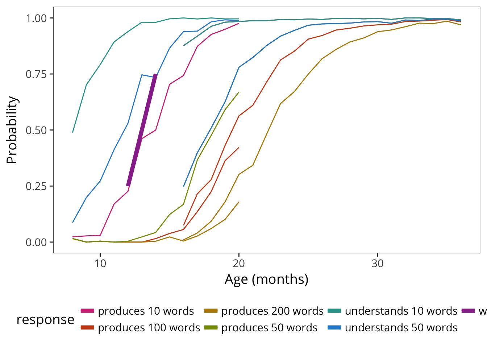
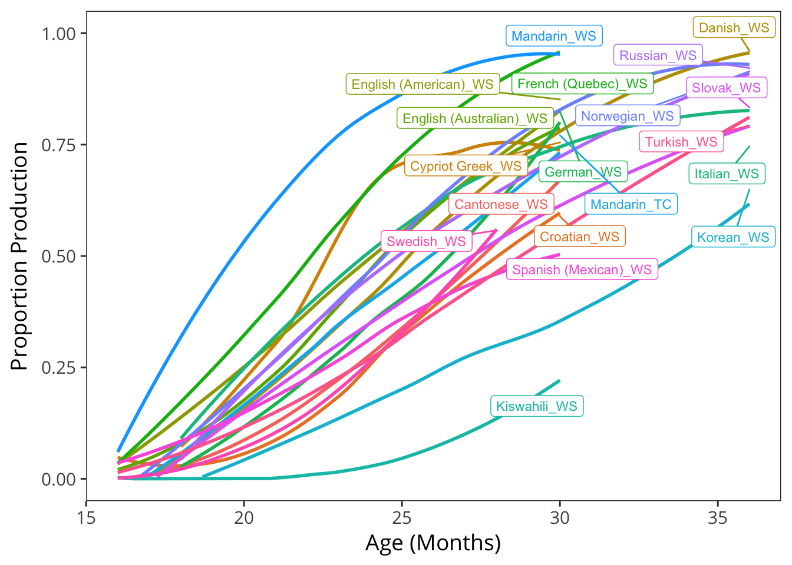
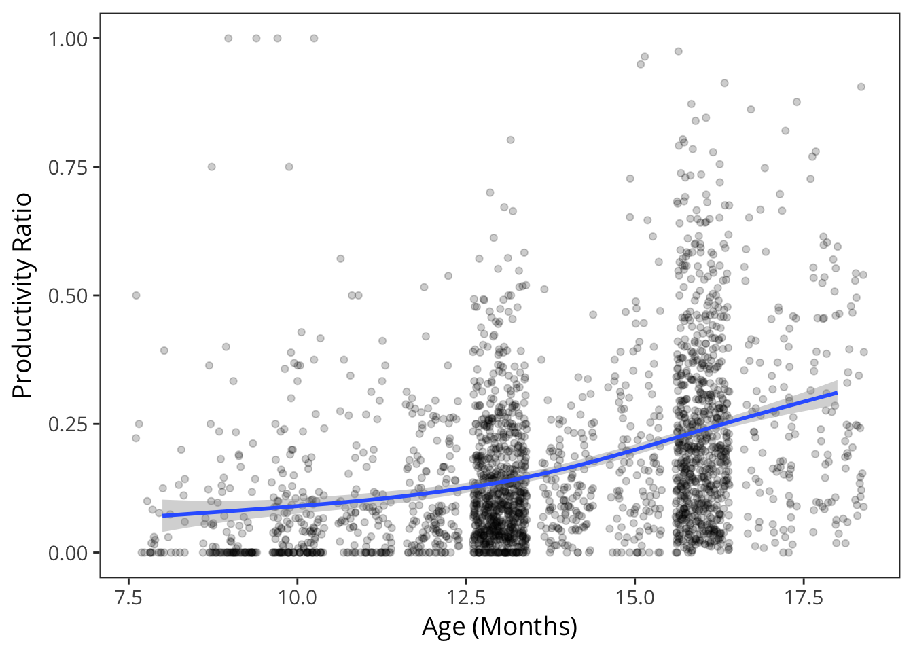
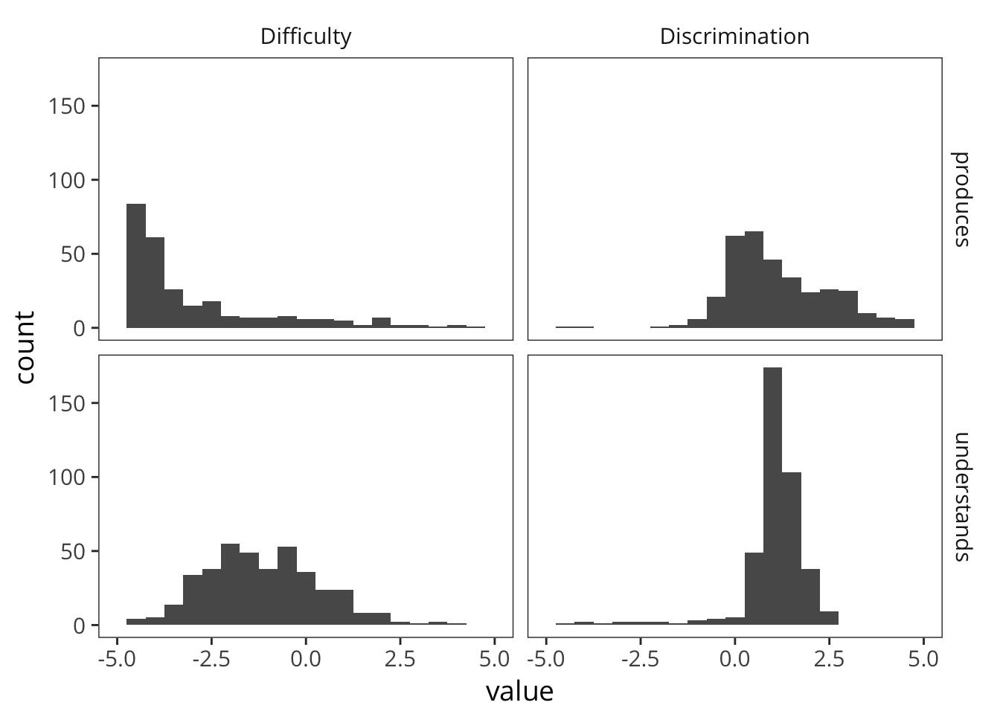
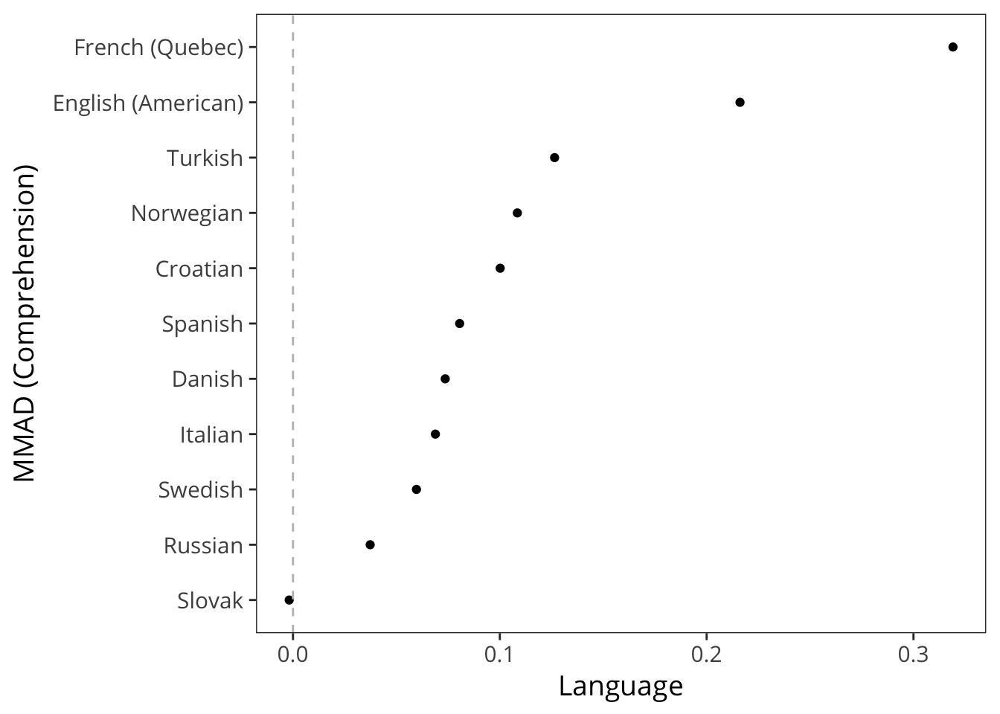
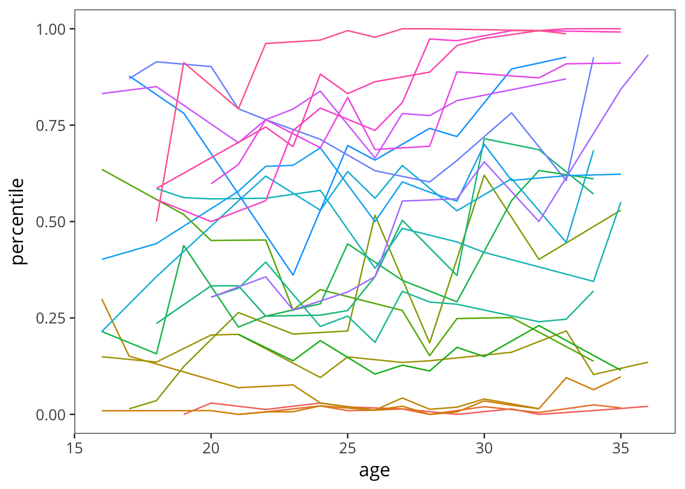
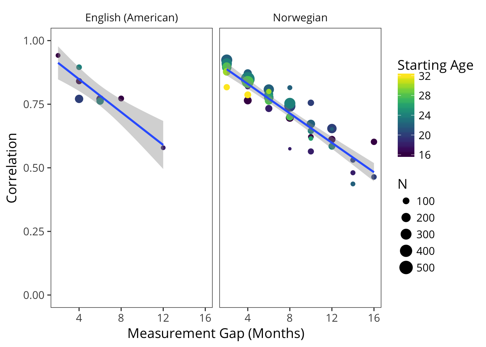
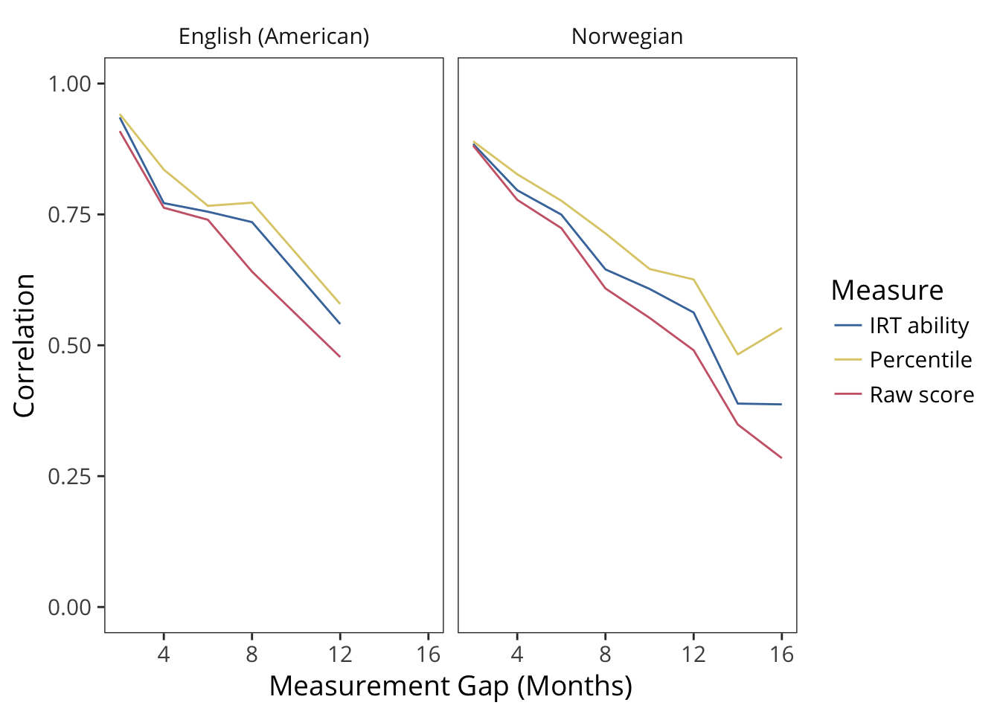

4 Psychometric Properties of the CDI
4.1 Limitations of parent report
Although the standardization of parent reports using the CDI contributes to the availability of large amounts of data in a comparable format, there are significant limitations to the parent report methodology that are important to understand (M. Tomasello and Mervis 1994; Feldman et al. 2000). To do so, it is useful to reflect on what it means when a parent reports that their child “understands” or “understands and says” a word. In an ideal world, the parent’s responses would be an unbiased reflection of their observations of their child’s language development. For example, when asked if their child produces the word dog, a parent is likely recalling situations in which their child has used the word dog correctly, and then reporting on the success or failure of this process of recollection. Of course, this judgment clearly depends on the parent’s ability to accurately judge that the child intended to say the word dog, that the child’s target word form was dog, and that the child has some meaning for the word form dog that at least approximates the expected meaning. There are also a number of other sources of information that the parent might bring to bear on these judgments.

Figure 4.1: The intuitive structure of parent report.
The figure shows a sketch of the process of parent report. For each word on the CDI, the parent is asked to report whether their child has produced or comprehended the word. This report could depend on direct recall of a particular case when their child actually produced or showed comprehension. But in addition to these factors, parents probably draw on their general assessment of the difficulty of the word and on their overall assessment of the child’s linguistic abilities. As even this simple sketch shows, parent report judgments are based on a fairly complex set of factors. And hence there are legitimate concerns about the ability of parents to provide detailed and specific knowledge about their children’s language. We discuss specific concerns below.
First, parents may be biased observers generally. Most parents do not have specialized training in language development, and may not be sensitive to subtle aspects of language structure and use. Further, a natural pride in the child and a failure to critically test their impressions may cause parents to overestimate the child’s ability (\(\mu_{c}\)); conversely, frustration in the case of delayed language may lead to underestimates. Parent report is most likely to be accurate under three general conditions: (1) when assessment is limited to current behaviors, (2) when assessment is focused on emergent behaviors, and (3) when a primarily recognition format is used. Each of these conditions acts to reduce demands on the respondent’s memory. For example, parents are better able to choose from a list of items that are likely candidates, rather than requiring that the parents generate the list themselves. In addition, parents are likely to be better able to report on their child’s language at the present time than at times past and when their child is actively learning the particular words on the list (e.g., names for animals).
Second, parent reports likely suffer from a number of biases that interact with sub-portions of the forms and the ages of the target children. For example, it is likely that parents may have more difficulty reporting on children’s comprehension or production of function words (e.g., so, then, if) than content words (e.g., baby, house)–relying more on their estimates of the words general difficulty (\(d\)). Moreover, in typically-developing samples, parents can track their child’s receptive vocabulary to about 16-18 months, after which it is too large to monitor. Expressive vocabulary can be monitored until about 2.5 - 3 years, after which the number of words a child can say becomes too large.
The CDI instruments capitalize on the greater ease of recognition, as contrasted with recall, to help offset these memory limitations. That is, it is better to ask parents to report on their child’s vocabulary by selecting words from a list of possible words rather than having them write down all the words they can recall hearing their child use (or, even worse, asking the global question: “Does your child know at least 50 words?”). In addition, asking parents to reflect on their child’s language abilities may be particularly difficult for early comprehension. As M. Tomasello and Mervis (1994) point out, for the youngest children, especially 8 - 10 month olds, vocabulary comprehension scores can be surprisingly high and likely implausible, possibly reflecting a lack of clarity in what the term “understands” means for parents of children at this young age.
Third, there is some evidence that variability in reporting biases may be moderated by factors such as SES (Feldman et al. 2000; L. Fenson et al. 2000; Feldman et al. 2005). Some studies suggest that parents from some SES groups may be more likely to underestimate child’s abilities (J. E. Roberts, Burchinal, and Durham 1999), while others report that parents from lower-SES groups may over-estimate children’s abilities, especially comprehension at younger ages [Goldfield and Reznick (1990); Feldman et al. (2000)). Later studies have shown that, for children over 2 years, patterns of validity were consistent in lower and higher-SES groups (Feldman et al. 2005; Reese and Read 2000). Thus, SES-differences could reflect valid delays in children’s language development that parallel those obtained with different methods, such as naturalistic observation or standardized tests (e.g., Hammer, Farkas, and Maczuga (2010)). A unique and important extension of this work for Wordbank is to examine the consistency of SES differences across a large number of languages and hence, language communities which may vary in the social impact of SES gradients.
Fourth, as discussed above, the items on the original CDI instruments were chosen to be a representative sample of vocabulary for the appropriate age and language (L. Fenson et al. 1994). The checklists contain some words that most, including the youngest, children are able to understand or produce, some words that are understood or produced by the “average” child, and some which only children who are relatively more advanced will understand or produce. This structure ensures that the list has the psychometric property of capturing individual differences in vocabulary both across younger and older children and across children of different developmental levels. Validity of the CDIs has been demonstrated in reference to both standardized tests and naturalistic language sampling (see Chapter 4 of L. Fenson et al. (2007)). Note that the checklists were not originally constructed with the intention that responses on individual items would be reliable. While item-level responses provide useful information about patterns of words that children are likely to understand or produce, responses on the vocabulary checklist do not necessarily license the conclusion that a child would respond appropriately when asked “can you say ____?” by an experimenter in a confrontation naming task. Nonetheless, if parents’ observations at the item level reflect any signal–even in the context of significant influence from other factors–then this signal should be observable by aggregating together data from many children.
Fifth, while the lengths of the vocabulary checklists on the CDIs may give the impression that they yield an estimate of the child’s full vocabulary, in fact the vocabulary size estimates only reflect a child’s relative standing compared to other children assessed with the same list of words(\(i\), see Mayor and Plunkett 2011 for discussion). Such estimates should not be misconstrued as a comprehensive estimate of the child’s vocabulary knowledge, as CDI scores likely understate the size of a child’s “true” vocabulary substantially, especially for older children (Mayor and Plunkett 2011). Moreover, while it is tempting to ask parents to indicate additional words that their child might be able to understand or say, users should be aware that including those items introduces bias in the estimates.
Sixth, when a parent reports on a word on the vocabulary checklist, there is no information about the actual form of the word used, and hence, these vocabulary estimates can say little about phonological development (e.g. segmental v. suprasegmental approaches to the analysis of speech). Parents are instructed that they should check that a child can produce a word even if it is pronounced in the child’s “special way,” and only approximates the adult form.
Finally, we also gain little information about the frequency with which children use a particular word in their spontaneous speech, nor can we know the range of contexts in which individual lexical items are used (e.g., is that word used productively vs. in a memorized chunk of speech). Thus, the vocabulary size that is captured by the CDIs reflects the number of different word types (not tokens) that the child is able to understand or produce, with little information about nuances in meaning that might be reflected in actual usage.
In sum, despite these limitations, when used appropriately, the CDI instruments yield reliable and valid estimates of total vocabulary size. Because the instruments were designed to minimize bias by targeting current behaviors and asking parents about highly salient features of their child’s abilities, they have proven to be an important tool in the field. Dozens of studies demonstrate concurrent and predictive relations with naturalistic and observational measures, in both typically-developing and at-risk populations (e.g., Dale and Fenson 1996; Thal, Jackson-Maldonado, and Acosta 2000; Marchman and Martínez-Sussmann 2002). In addition, a variety of recent work has shown that individual item-level responses can yield exciting new insights, for example about the growth patterns of semantic networks when aggregated across children (Hills et al. 2009; Hills et al. 2010). Such analyses have the potential to be even more powerful when applied to larger samples and across languages as they are within Wordbank.
In this Chapter, we examine the psychometric properties of the CDI through the lens of Item Response Theory (IRT). In brief, IRT provides a set of models for estimating the measurement properties of tests consisting of multiple items. These models assume that individuals vary on some latent trait, and that each item in a test measures this latent trait (see F. B. Baker 2001 for detailed introduction).
4.2 IRT Modeling
IRT models vary in their parameterization. In the simplest (Rasch) IRT model, each item has a difficulty parameter that controls how likely a test-taker with a particular ability will be to get a correct answer. In the more sophisticated two-parameter model, each item also has a discrimination parameter that controls how much response probabilities vary with varying abilities. Good items will tend to have high discrimination parameters across a range of difficulties so as to identify test-takers at a range of abilities.
IRT models are a useful tool for constructing and evaluating CDI instruments, as they can help to identify items that perform poorly in estimating underlying ability. For example, WEBER et al. (2018) used IRT to identify poorly-performing items in a CDI instrument for Wolof (a language spoken in Senegal). IRT can also be used in the construction in computer-adaptive testing (Makransky et al. 2016).
This appendix examines IRT models as a window into the psychometric properties of the CDI. In the first section, we explore latent factor scores using the English WS data. In the second section, we examine individual items and find generally positive measurement properties, although with some items at ceiling (included via carry-over from the Words and Gestures form). In the third section, we look at differences between comprehension and production in the WG form. In the fourth section, we look at the properties of the instrument by word category in both WS and WG.
Overall, the conclusions of our analysis are that:
- Latent factor scores may have some advantages relative to raw scores in capturing individuals’ abilities, but for the purposes of the analyses we perform in the main body of the manuscript, they may carry some risks as well; hence we do not adopt them more generally.
- In general, CDI WS items tend to perform well, but from a pure psychometric perspective there are a number of items that could be removed from the English WS form.
- Comprehension items in general tend to have less discrimination than production, suggesting that they are not as clear indicators of children’s underlying abilities.
- Function words tend to have lower discrimination than other items but the lexical class differences are not huge and do not interact with whether they are measured using production vs. comprehension.
4.3 Preliminary Estimation
Practically, we use the mirt package (???,Chalmers and others (2016)) to estimate the parameters of a four-parameter IRT model. The four-parameter model supplements the standard two-parameter model with two parameters corresponding to floor and ceiling performance for a particular item. Items with high rates of guessing or universal acceptance across test takers would tend to have abnormal values on these bounds. Our goal in this first analysis is simply to examine parameter estimates across individuals and items.

We begin by estimating this model with data from 5492 from the English (American) WG dataset. We first examine the histograms of latent ability scores and compare them with chronological age (because sampling is non-uniform) and raw production scores. As can be seen above, latent ability shows a peak in the middle of the range and generally fewer cases distributed at floor and ceiling. This shift indicates first, that floor and ceiling effects in the form are partially rectified by the model, and second, that many children in the middle of the form’s range are not well-distinguished from one another.
One question regarding these scores is whether they should be used in place of proportion scores for some of the estimation problems we encounter throughout the rest of the book. These latent ability scores might be overall better reflections of children’s vocabulary than raw proportions in the best case. Nevertheless, we do not adopt them, for two reasons.

First, they do not perform better empirically. The analysis above shows gender differences (cf. Chapter @ref(#demographics)) by both measures. Surprisingly, there appear to be limited differences in the curves recovered by the analyses. For example, for raw production, the coefficient of variation across age in the gender differences is 0.6. For the latent ability estimates, the CV is 0.64. Thus, based on the assumption that gender differences are constant across age, there is no evidence for better measurement. Of course, this assumption may be wrong, but this analysis does not yield evidence in favor of adoption. (Perhaps a smaller sample might yield different results; it could be that raw scores are stable due to the large amount of data in this analysis).
Second, there are other negatives associated with swapping an imperfect but straightforward measure (raw scores) to a model-derived measure (latent ability). Interpretation clearly suffers if we use the model-derived measure, since readers will not be able to map scores back to actual behavior in terms of the checklist. In addition, model estimation issues across instruments introduce further difficulties in interpretation. Most obviously model estimates with smaller datasets may vary in unpredictable ways; similarly, the presence of poorly-performing items (see below) in certain datasets may lead to systematic issues in the latent estimates for those datasets.
4.4 Item effects in WS

Our next analysis examines items in the same WS dataset. The plot above shows item discrimination and difficulty, with outlying items labeled. Visual inspection shows a long tail of items with limited discrimination and low difficulty (e.g., mommy, ball, bye, etc.). These are clearly those items that are produced by nearly all of the children in the sample – they do not discriminate because they are passed by all children in the sample. If the only goal of the instrument were discrimination of different ability levels, they could likely be removed. On the lower right hand side of the plot, the remainder of items are clumped, with discrimination above zero and somewhat higher difficulty. The right-hand tip of this triangle shows the most diagnostic words (e.g., run, kitchen, and table), all of which effectively distinguish between the upper and lower groups of children in the sample. Finally, at the bottom of this triangle is a large cluster of words that are quite difficult. Some of these do not show good discrimination (e.g., country), since it is likely too difficult for nearly all children in the sample.

We can follow up on the question of word inclusion by examining the distribution of discrimination parameters alone. Overall, this plot suggests that there are some items that could be dropped without major penalty. In particular, along with the very easy words in the left tail, there is a large cluster of words that are perhaps too difficult to be useful for most children.

As a separate check on this analysis, we can examine the upper and lower bounds estimated for particular words. These bounds show words that are known by only a small number of children at ceiling or have a very high floor (respectively). Examining those with a very low ceiling, we see items that are likely to be quite idiosyncratic, for a variety of reasons. For example, babysitter, camping, and basement likely vary by children’s home experiences (further mediated by access to resources, parenting practices, and circumstances). In contrast, genital items (e.g. vagina*) vary by gender (see Chapter 9). Examining those items with a very high base rate shows a similar set to those with very low discrimination patterns, suggesting that the four-parameter model may have fit these words as having a high chance level with essentially no discrimination ability.

Finally, we see items like grrr, woof woof, moo, and yum yum. These items show limited development across the age range of the instrument. Although most parents report children saying yum yum early, it is likely that some families either do not say yum yum or do not report it on the form as a signal of gustatory pleasure (perhaps because their 30-month-old already says delicious).
4.5 Production and comprehension

We next use IRT to estimate whether there are differences between production and comprehension, using WG data. The plot above shows IRT parameter values for discrimination and difficulty for production and comprehension (a few extreme parameter values are truncated in the plot for ease of seeing general trends). There are clear distribution differences on both measures. Difficulty is much higher (negative values) for production relative to comprehension, reflecting the expected asymmetry.
We also see clear evidence that in general comprehension items show less discrimination, consistent with the hypothesis that production behavior is a clearer signal of children’s underlying knowledge than assumed comprehension. This pattern is visible in two ways. First, discrimination values are negative for more items in comprehension, indicating items that are not measuring ability. Second, and more importantly, mean discrimination is substantially lower for comprehension relative to production (1.1 vs. 1.8). Very few comprehension items have discrimination is greater than 2.
This pattern of findings – lower discrimination values for comprehension – could be due to at least two possibilities. One is that parents are better reporters of production than comprehension, and hence these items are more discriminative of true behavior. The source of error in this case would be parents’ mistaken belief that their child understands a word. The second is that comprehension is a fundamentally more variable construct and that, hence, individual word knowledge consistent with understanding could be due to partial knowledge. Here the source of error is variance in how well children know the meanings of words. We cannot distinguish between these two models, but they have very different underlying implications for the CDI. On the first model, comprehension is simply hard to measure with parent report. On the second, comprehension is perhaps a richer and more nuanced behavior than production.
4.6 Properties by lexical category
One hypothesis that we have often speculated about is the question of whether there are special psychometric issues with particular word classes. For example, do parents struggle especially to identify whether children produce or understand function words?

The plot above reproduces the WG by-item analyses above but with color given by lexical class. Many of the easy, non-discriminating items are found in the “other” section. In contrast, the hardest items tend to be function words. These items tend to have lower discrimination on average (1.3) compared with nouns (1.8), adjectives (1.9), and especially verbs (2.1). Nevertheless, the situation is not dire: most have a discrimination parameter above one. Thus, although function words are not the most discriminative items on the CDI WS, these items still appear to encode valid signal about children’s abilities.

In our last analysis, we turn to the WG data. The plot above shows the mean and standard deviation for discrimination parameter values. In production, the higher discrimination shown on the whole (above) is likely due to the strong performance of nouns. In contrast, mean discrimination for other words is low. This pattern may be due to the overall sparsity of early production data for non-noun items. In comprehension, in contrast, there is a moderate level of discrimination for all classes except “other” (which includes items like mommy and daddy and a variety of animal sounds and social routines). One hypothesis about this finding is that, especially early on, parents are very generous in their interpretation of whether their child understands these words.
In sum, we do not find evidence that function words are particularly bad. Rather, there are some low-performing items spread across all categories of the CDI form, and many of these likely perform poorly for the reasons described above – especially difficulty in interpretation of very early behavior and variability in home experience.
4.7 Stability of the CDI
The first locus for individual differences in language acquisition is the rate of growth. As already discussed in Chapter 5, there is substantial variability between children in vocabulary size. As we showed there, across many languages there is a consistent – and high – rate of variability between children.
Because these data were cross-sectional in nature rather than longitudinal, they cannot answer the question of whether the variability observed is stable as well as substantial (parphrasing Bates). In this and the next subsection, we make use of longitudinal data in the Wordbank dataset to investigate this idea.
In our first investigation of the longitudinal data, we look at how stable individual children are. There are only a small number of deeply longitudinal corpora in Wordbank, so we will limit our investigation to two languages: Norwegian and English. Furthermore, the largest group of longitudinal data cover the WS form so we restrict to these data for simplicity. Within each of these datasets, the modal number of observations is two, but there are some children with more than 10 CDIs on record.

The figure above shows the trajectories of children who were measured a large number of times (>10), and includes Norwegian data only due to data sparsity issues in English. Thes trajectories appear quite stable; the ranking of individuals does not appear to change much over the course of several years. This conclusion is ratified by other studies using different datasets, for example Bornstein and Putnick (2012), who found substantial stability (\(r = .84\)) between latent constructs inferred from early language at 20 months and later language measured at 48 months.
 One way to operationalize the question of stability is how children’s percentile ranks tend to change over time. We examine this question creating an empirical CDF for each age group. We could use a model-based method (e.g., the gcrq method used in the Wordbank app and Chapter 5 and 6) but in practice we have enough data in each of these languages that this method should perform well. As shown above, these are visually quite stable. 
This transformation to percentile ranks allows us to assess the correlation between a child’s percentile rank at time 1 and their rank at time 2, depending on the gap between these two. Because of sparsity, we bin children into two-month age bins and eliminate age bins with fewer than 50 children, then calculate between-bin correlations in percentiles. The figure above shows this analysis, which reveals that percentile ranks are quite stable; across a 2-4 month age gap they are correlated at better than .8. This stability declines to around .5 at 16 months, but this decline should be taken with a grain of salt. First, this range is a doubling of the child’s age, so stability might be expected to be lower. But second, even with the use of percentile ranks, many childen who are measured longitudinally across a 16-month gap will be expected to move from the floor of the form to the ceiling, compromising measurement accuracy.

To test this last hypothesis, we evaluated the longitudinal stability of correlations using the same analysis as above. We varied whether we used latent abilities derived from a 4-parameter IRT model as in Appendix 4, raw scores, or the percentiles used above. While the IRT model abilities realized a consistent improvement over the use of raw scores, percentiles realized a further gain over IRT ability scores.
In sum, the variability between children that we observe in the CDI is quite stable longitudinally. It declines over time, but some of this decline may simply be due to the unavoidable limitations of CDI forms with respect to floor and ceiling effects.